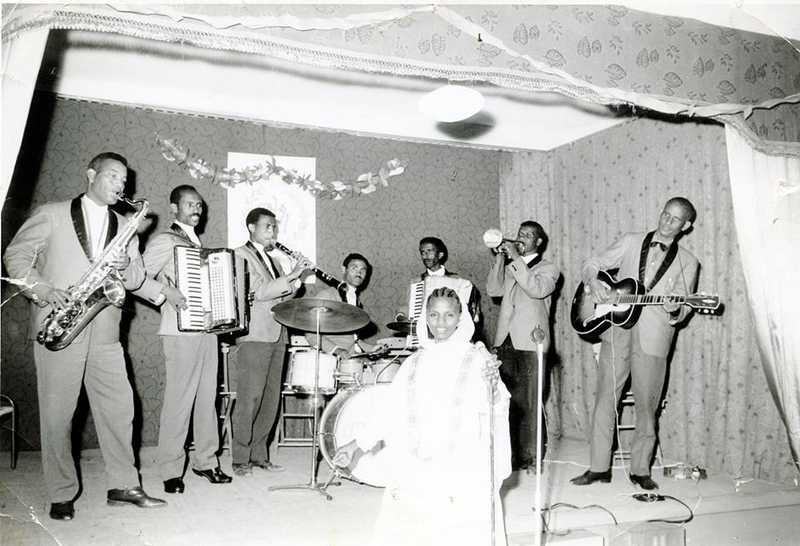

Mahber Tyatr Asmera (Mat'A ™) or Asmara Theater Association was founded by interested citizens to push for an Eritrean cultural and national renaissance. Besides the association's goals of promoting Eritrean culture and identity, it also strongly pushed to empower and embolden the youth to stand up against Ethiopian rule by promoting resistance through music and poetry. For this reason, the association was always under heavy surveillance and censorship by the Ethiopian government. But this didn't stop many of the members from writing many cryptic songs instilling patriotic fervor in the youth.
Seemingly romantic or simple songs about life in general would have a different invigorating meaning to many youth of the time. Notable songs can be:
Another accomplishment of Mat'A to be noted is the inclusion and empowerment of Eritrean women artists. One of the notable singers from this time was Tibereh Tesfahuney.
Copyright MateA 2024 ©